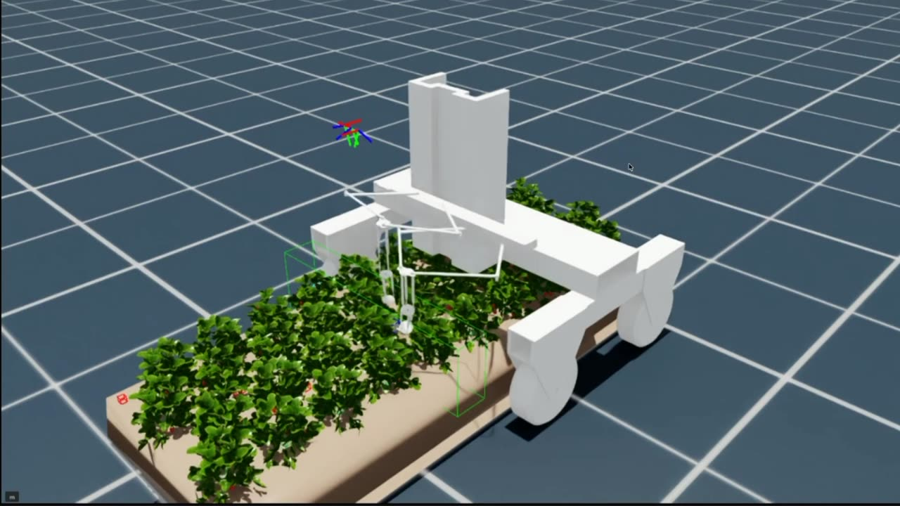
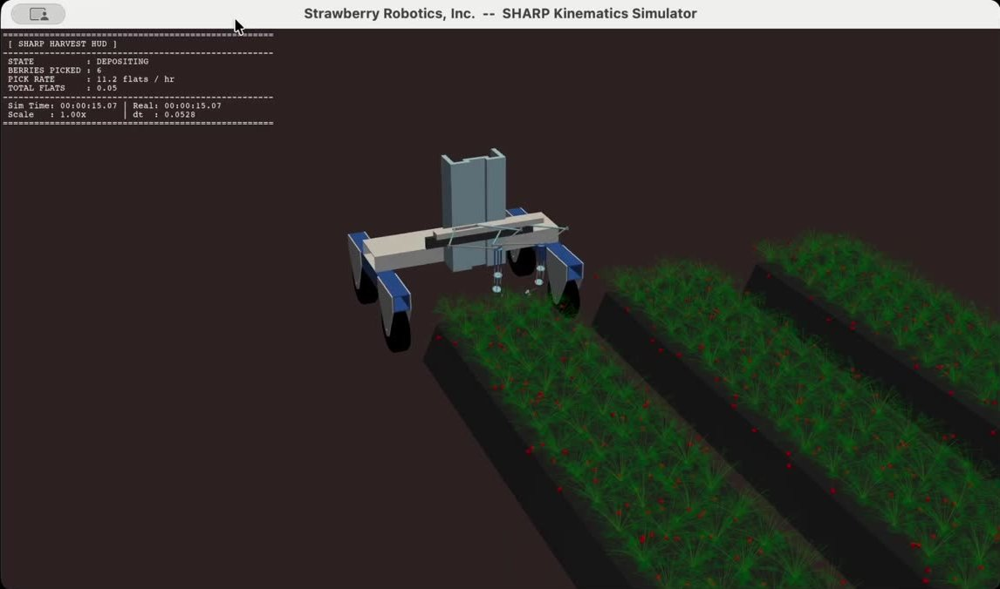
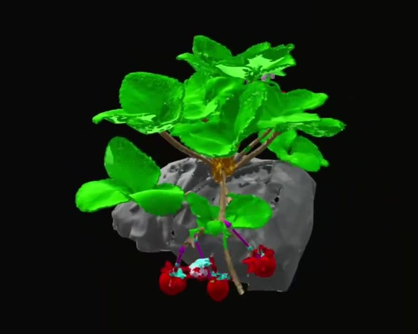

The company
California strawberry growers lose crops because there aren't enough workers to harvest them, and conventional robot arms are too slow to pick profitably. Strawberry Robotics is building SHARP, a gantry-mounted, two-armed harvesting robot for strawberries and other canopy crops, with low-inertia hydrostatic arms designed for fast picks.
We were a two-person founding team. My co-founder Walt White led strategy and product; I owned the AI side end to end: simulation, perception, and robot learning.
Simulation
All of our robot learning ran through simulation. I built the strawberry environment in NVIDIA Isaac Sim with SHARP's custom arms, plant beds, and robot cameras, and used it to record teleoperated picks as training data. I also built a separate kinematics simulator of the full gantry and both arms.


Perception
To pick a strawberry cleanly, the robot needs to know where the stem attaches and which way it points. I trained a point-transformer model that segments depth scans of strawberry plants into leaves and berries and predicts each berry's stem attachment point and direction. I paired it with a YOLO detector in a single pose-estimation pipeline.

Robot learning
We pursued three approaches to the picking policy in parallel, sharing one data format and one benchmark so progress on any of them helped the others. My work across them:
- Imitation learning: recorded teleoperated demonstrations and trained a policy on a multistep picking task.
- Foundation models: fine-tuned a large vision-language-action model on our own dataset.
- Reinforcement learning: built an automated reward-shaping tool for training a novel dexterous robot, running across multiple machines.